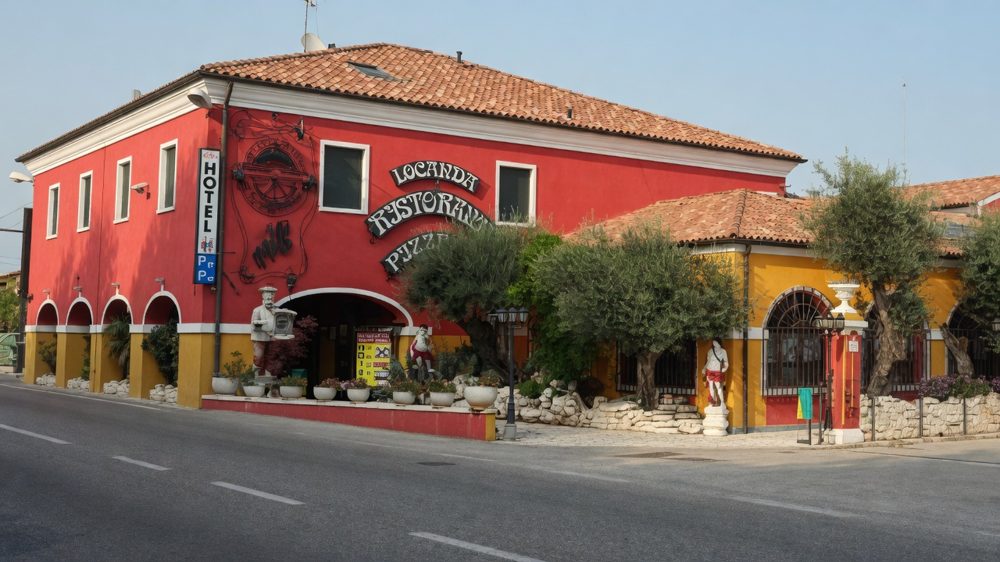
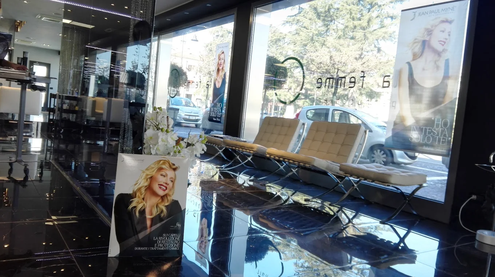
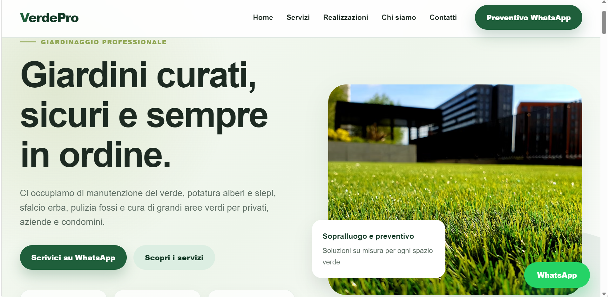

Presenza online poco efficace
Un sito web datato o poco curato può trasmettere un'immagine non all'altezza del valore reale dell'attività. Oggi la presenza online rappresenta il primo punto di contatto tra un'azienda e i suoi potenziali clienti.
Sviluppatore Freelance • Siti Web • Applicazioni • Soluzioni Digitali
Realizzo siti web, applicazioni e strumenti digitali per aziende, ristoranti, bar, centri estetici, palestre, professionisti e startup che vogliono presentarsi meglio online, attirare più clienti e offrire un’esperienza più professionale.
Non creo solo pagine web: progetto soluzioni pensate per risolvere problemi concreti, migliorare la comunicazione, semplificare il lavoro e rendere la tua attività più efficace anche online.
Perché migliorare
Molte aziende possiedono già strumenti digitali, ma spesso non sono progettati per supportare davvero la crescita e le esigenze dell'attività.
Un sito web datato o poco curato può trasmettere un'immagine non all'altezza del valore reale dell'attività. Oggi la presenza online rappresenta il primo punto di contatto tra un'azienda e i suoi potenziali clienti.
Se un sito è lento, poco intuitivo o difficile da utilizzare da smartphone, molte opportunità possono andare perse prima ancora che il cliente decida di restare sul sito e contattarti.
Ogni azienda ha processi e necessità differenti. Utilizzare soluzioni generiche non sempre è sufficiente. In molti casi servono strumenti personalizzati capaci di adattarsi al modo reale di lavorare.
Servizi
Che tu abbia bisogno di un sito professionale, di migliorare quello esistente o di creare uno strumento personalizzato, l'obiettivo resta lo stesso: rendere la tua attività più chiara, efficiente e facile da gestire e da scegliere.
Progetto e sviluppo siti web moderni, responsive e curati nei dettagli, pensati per presentare la tua attività in modo professionale e aiutare i clienti a capire subito chi sei, cosa offri e perché sceglierti.
Analizzo siti già online per migliorarne struttura, design, usabilità e comunicazione, correggendo ciò che limita l'efficacia del progetto.
Sviluppo strumenti digitali e applicazioni web pensate per semplificare processi, migliorare l'organizzazione e supportare il lavoro quotidiano.
Portfolio
Una raccolta di progetti sviluppati per migliorare l'esperienza utente, la presenza online e l'efficacia degli strumenti digitali.

Ho riprogettato la struttura visiva e testuale per creare un’esperienza più chiara, professionale e orientata alla conversione, valorizzando identità del locale e punti di forza.
HTML • CSS • JavaScript • Responsive Design • UX/UI

Ho ripensato la struttura per creare una presenza online più elegante, ordinata e coerente, guidando l’utente verso una navigazione più semplice e professionale.
HTML • CSS • JavaScript • Responsive Design • UX/UI

Progetto creato da zero per presentare in modo chiaro i servizi principali e rendere più semplice la richiesta di un preventivo tramite CTA dirette.
HTML • CSS • JavaScript • Responsive Design • UX/UI
Metodo
Ascolto le esigenze dell'attività, identifico gli obiettivi e comprendo il problema reale da risolvere.
Definisco la soluzione più adatta, organizzo la struttura del progetto e stabilisco le funzionalità davvero necessarie.
Realizzo il progetto prestando attenzione a esperienza utente, prestazioni, responsive design e qualità del codice.
Dopo il rilascio raccolgo feedback e valuto eventuali miglioramenti, così la soluzione continua a rispondere alle esigenze dell'attività.
Chi sono
Lavorare con me significa avere un riferimento diretto, attento e presente in ogni fase del progetto. Ascolto le esigenze della tua attività, trasformo gli obiettivi in una soluzione concreta e sviluppo strumenti digitali pensati per essere utili, chiari e facili da usare.
Ogni scelta, dal design alla struttura del sito, viene curata per trasmettere professionalità e rendere l’esperienza più semplice per i tuoi clienti.
Non parto da soluzioni standard: progetto siti e strumenti digitali in base alle reali necessità della tua attività.
Dopo la consegna resto disponibile per miglioramenti, aggiornamenti e ottimizzazioni, così il progetto può crescere insieme alla tua attività.
Contatti
Raccontami la tua situazione e vediamo insieme quale soluzione può essere più adatta alle esigenze della tua attività.